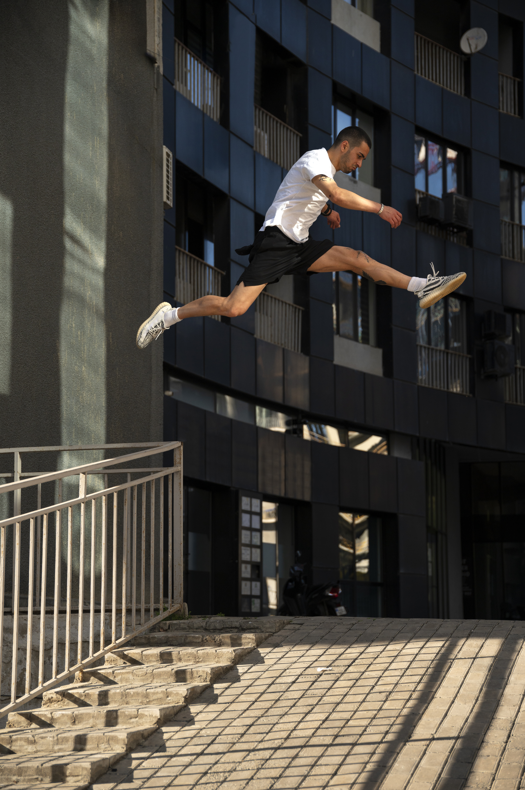
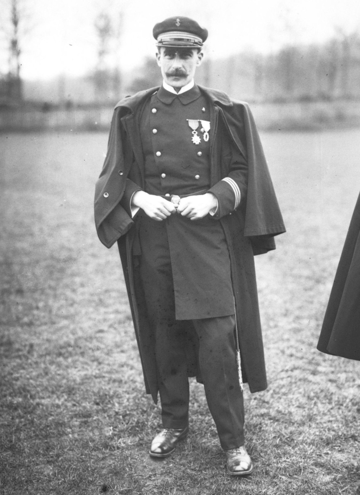
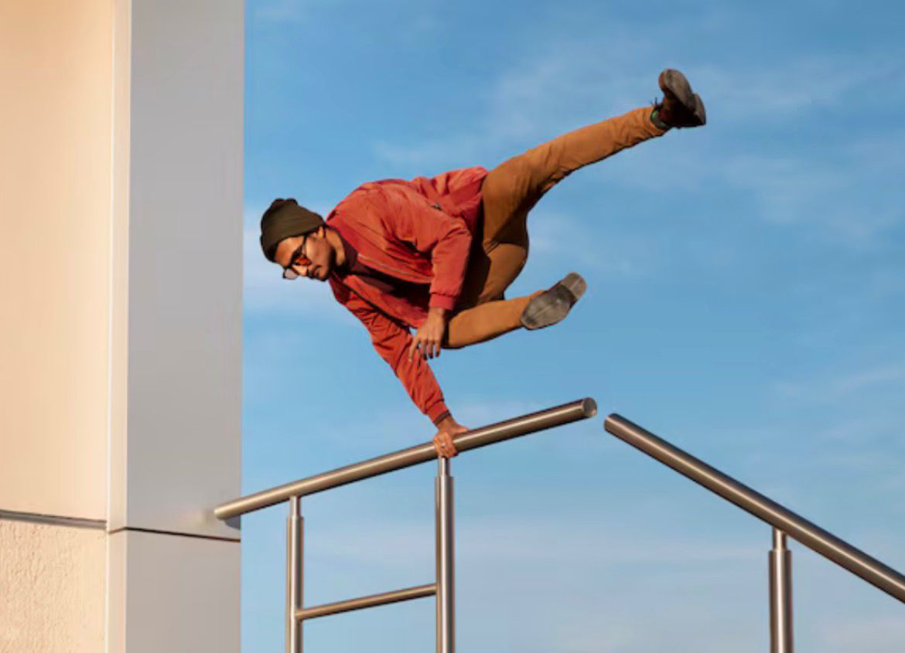
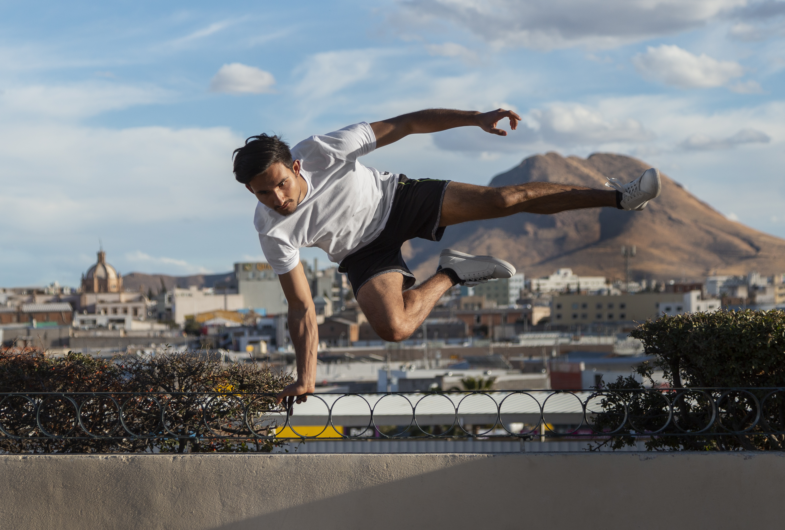

07 — Multimedia
Parkour é a arte do movimento — superar obstáculos urbanos com fluidez, força e criatividade. Uma disciplina que transforma a cidade numa arena de possibilidades infinitas.

O Parkour nasceu em França nos anos 80, desenvolvido por David Belle, inspirado nos métodos de treino militar méthode naturelle do seu pai, Raymond Belle. A filosofia central é simples: mover-se de um ponto A para um ponto B da forma mais eficiente possível.
Originalmente chamado "l'art du déplacement" (a arte do deslocamento), rapidamente ganhou identidade própria. Georges Hébert, militar francês do início do século XX, influenciou profundamente a disciplina com os seus métodos de treino baseados em obstáculos naturais e urbanos.
Nos anos 2000, o parkour explodiu globalmente graças a documentários, filmes e redes sociais, tornando-se uma forma de expressão artística e desportiva reconhecida mundialmente — e em 2024, deu os primeiros passos para integrar os Jogos Olímpicos.

O objetivo principal é mover-se do ponto A ao B pela rota mais eficiente possível, sem obstáculos desnecessários e com o mínimo de esforço desperdiçado.
Nunca tentes um movimento para o qual não estás preparado. A progressão gradual é fundamental — domina cada técnica antes de avançar para desafios maiores.
Respeita o ambiente urbano e as pessoas ao redor. Não danifiques propriedade, não perturbes o espaço público e pede sempre autorização quando necessário.
O parkour tem uma forte cultura de partilha de conhecimento. Mais experientes devem ajudar iniciantes, criando uma comunidade solidária e inclusiva.
Enfrenta os obstáculos como desafios de superação pessoal. Cada falha é uma oportunidade de aprender — a persistência é a chave do desenvolvimento.
Treina força, condição física e técnica de forma equilibrada. O corpo é a tua única ferramenta — mantê-lo forte e saudável é uma obrigação do praticante.
Sapatilhas com sola de borracha de alta aderência, biqueira reforçada e perfil baixo. Marcas como La Sportiva, Feiyue ou Nike Free são referência. Evita solas muito grossas que reduzem o feedback do chão.
Calças de treino com elastano que permitem amplitude total de movimento. Camisola leve e respirável. Evita roupas largas que possam enganchar em obstáculos.
Algumas superfícies rugosas beneficiam do uso de luvas. Contudo, muitos praticantes preferem o contacto direto com as mãos para melhor sensibilidade e controlo.
Para carregar água, toalha e kit de primeiros socorros básico. Usar mochila bem ajustada para não alterar o centro de gravidade durante os movimentos.
Uma garrafa de água de 500ml a 1L é essencial. O parkour é um desporto de alta intensidade — manteres-te hidratado é crucial para o desempenho e segurança.
Pensos rápidos, ligaduras e spray antisséptico. Arranhões e escoriações são comuns, especialmente em iniciantes. Estar preparado é parte da mentalidade de segurança.
Técnica de ultrapassar obstáculos horizontais com as mãos. Inclui variantes como Speed Vault, Kong Vault e Lazy Vault, cada uma otimizada para diferentes situações e velocidades.
Salto controlado de um ponto a outro com aterragem precisa e equilibrada. Fundamental para o desenvolvimento da consciência espacial e controlo corporal.
Salto em direção a uma superfície vertical, agarrando-a com as mãos e apoiando os pés. Usado para alcançar superfícies elevadas a partir de uma corrida.
Usar uma parede ou obstáculo vertical como trampolim para ganhar altura ou mudar de direção. Requer timing preciso e boa leitura do espaço.

Analisar o ambiente antes de agir. Um bom praticante "lê" o espaço urbano como uma língua, identificando pontos de apoio, linhas de movimento e zonas de risco.
Encadear movimentos sem paragens desnecessárias. O objetivo é manter o momentum para maximizar a eficiência energética e a velocidade de deslocamento.
Avaliar cada obstáculo em função da capacidade atual. Nunca ceder à pressão social para tentar algo perigoso — a autodisciplina é uma tática central.
O mesmo percurso pode exigir técnicas diferentes consoante as condições — chuva, luz solar, superfícies escorregadias. A adaptabilidade é uma competência tática crucial.

Semanas 1–4: Fortalecer o corpo para suportar os impactos do parkour.
Semanas 5–8: Cat Leap, Tic-Tac, altura e resistência.
Semanas 9–10: Criar linhas próprias e ganhar velocidade.
Semanas 11–12: Criatividade, expressão e consolidação final.